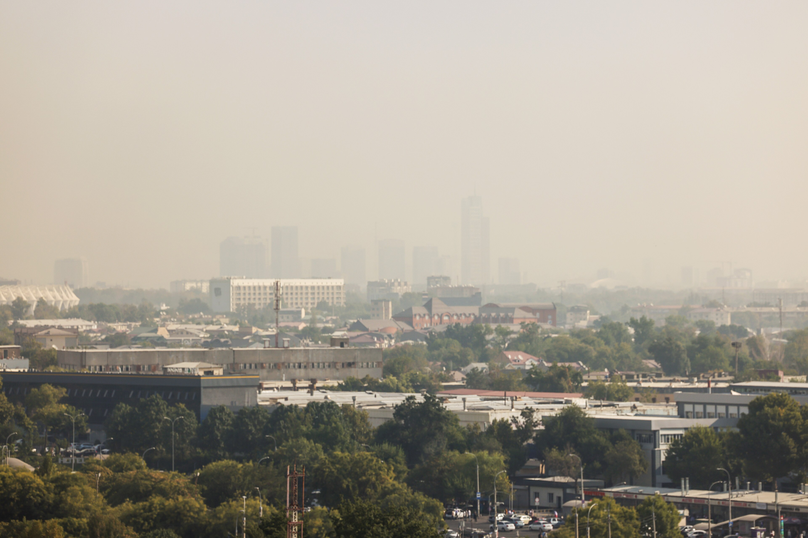

Первые годы независимого Узбекистана: строительство государства (1991–1994)
После провозглашения независимости 31 августа 1991 года — референдум 29 декабря, государственные символы, Конституция 1992 года, членство в ООН и введение национального сума. Фактическая история с датами и цифрами.

Узбекистан провозгласил независимость 31 августа 1991 года. Последовавшие годы стали периодом строительства нового государства: референдум и выборы, государственные символы, конституция, собственная валюта и членство в международных организациях. Ниже эти первые годы изложены на фактической основе, с проверенными датами и цифрами.
Референдум и первые президентские выборы
29 декабря 1991 года прошёл всенародный референдум о независимости. По официальным результатам, независимость одобрили 98,26% участников (явка ~94%). В тот же день состоялись первые прямые президентские выборы: по официальному результату, Ислам Каримов победил с 87,14% голосов, а его единственный соперник Мухаммад Солих (партия «Эрк») получил ~12,49%.
Важное примечание: это официальные результаты. Международные наблюдатели не сочли выборы 1991 года свободными и справедливыми, а оппозиция оспорила подсчёт. Поэтому цифры приводятся как «официально объявленные» результаты.
Государственные символы
Новое государство приняло свои символы поэтапно: государственный флаг — 18 ноября 1991 года; государственный герб — 2 июля 1992 года; государственный гимн — 10 декабря 1992 года. Музыка гимна принадлежит Муталю Бурханову, слова — Абдулле Арипову.
Конституция
Конституция Республики Узбекистан была принята 8 декабря 1992 года на 11-й сессии Верховного Совета (в первоначальной редакции — 6 разделов, 26 глав и 128 статей). 8 декабря отмечается как День Конституции.
Членство в международных организациях
Узбекистан был принят в Организацию Объединённых Наций 2 марта 1992 года (в тот же день, что и семь других бывших советских республик). В том же году страна вступила во Всемирный банк и Международный валютный фонд (оба — 21 сентября 1992 года) и в СБСЕ/ОБСЕ (1992). 28 ноября 1992 года она вступила в Организацию экономического сотрудничества (ОЭС). Ранее, в декабре 1991 года, она была одним из государств — основателей СНГ.
Национальная валюта — сум
Переход к самостоятельной денежной системе прошёл в два этапа: 15 ноября 1993 года был введён переходный «сум-купон» (для защиты экономики от рублёвой инфляции), а 1 июля 1994 года введён постоянный сум (1 новый сум = 1000 сум-купонов), ставший единственным законным платёжным средством.
Реформа алфавита
2 сентября 1993 года был принят закон о введении узбекского алфавита на основе латиницы. Переход планировался постепенным; алфавит был пересмотрен в 1995 году. На практике кириллица и латиница долго используются параллельно.
Другие шаги государственного строительства
14 января 1992 года Узбекистан перевёл воинские формирования на своей территории под национальный контроль и создал собственные Вооружённые силы (14 января — День защитников Родины). Центральный банк был учреждён в 1991 году, его роль ярко проявилась в денежных реформах 1993–1994 годов. Столица — Ташкент; первый президент — Ислам Каримов (1938–2016).
По датам
- Флаг: 18 ноября 1991 года
- Референдум и президентские выборы: 29 декабря 1991 года
- Членство в ООН: 2 марта 1992 года
- Герб: 2 июля 1992 года
- Членство во Всемирном банке и МВФ: 21 сентября 1992 года
- Членство в ОЭС: 28 ноября 1992 года
- Конституция и гимн: декабрь 1992 года (8 и 10 декабря)
- Закон о латинском алфавите: 2 сентября 1993 года
- Сум-купон: 15 ноября 1993 года; сум: 1 июля 1994 года
Примечание
Изложенное выше — фактическое описание проверенных дат и официальных результатов. Проценты референдума и выборов 1991 года взяты из официальных источников и не были независимо подтверждены; они приведены с этой оговоркой.
Источники
- U.S. Commission on Security and Cooperation in Europe — 1991 referendum & election report
- constitution.uz — State symbols of Uzbekistan
- Wikipedia — Constitution of Uzbekistan (8 December 1992)
- United Nations — Member states (Uzbekistan admitted 2 March 1992)
- IMF — Republic of Uzbekistan (membership 21 September 1992)
- Wikipedia — Uzbekistani sum (som-coupon 1993, som 1994)
- Wikipedia — Uzbek alphabet (Latin-script law 1993)